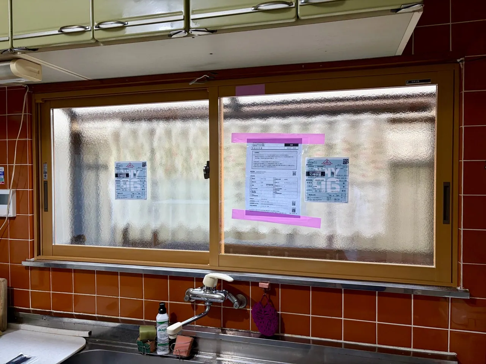
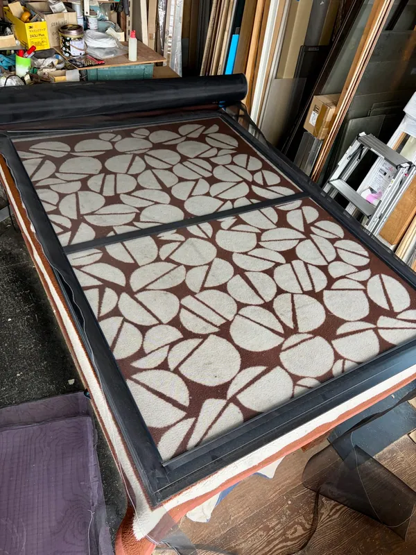
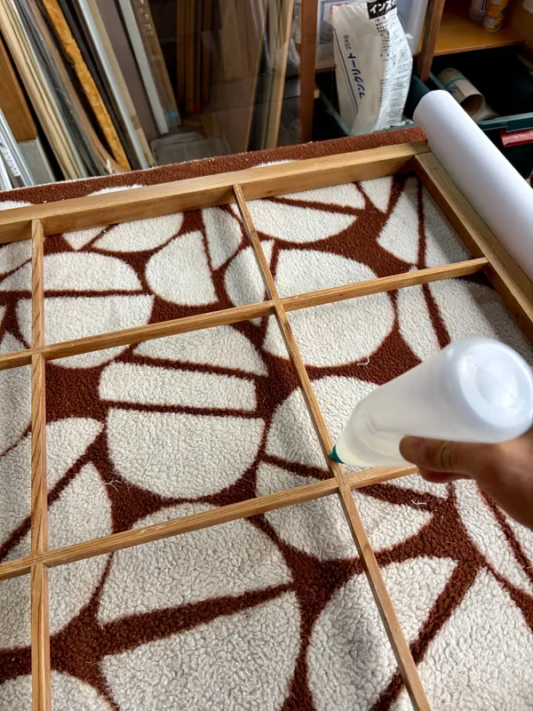
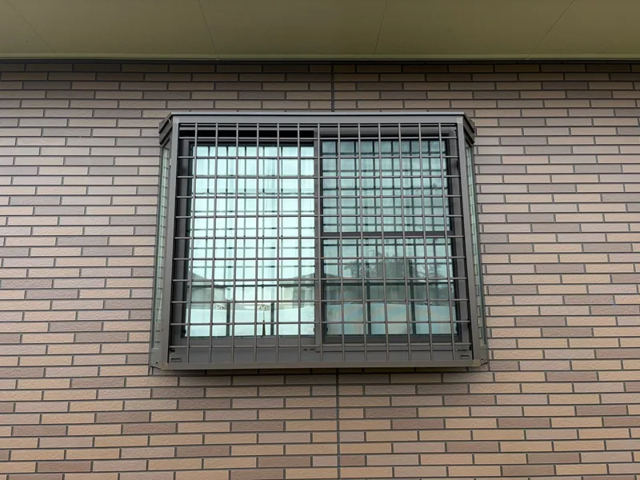

内窓の取付け
今ある窓の内側に、もう一枚窓を付ける工事です。冬の寒さ・結露、外の音、防犯の対策になります。補助金の対象になる場合があります。
桶川市・北本市・上尾市周辺の窓まわりの工事
冬の寒さや結露、防犯、網戸や障子の破れ。内窓の取付け、網戸・障子の張り替え、面格子の取付け、ガラス交換まで。網戸1枚のような小さな工事も、Real Makeがそのまま承ります。どの工事が合うか分からなくても大丈夫です。
予算の目安網戸の張り替え 1,800円〜／1枚税込・幅90cmの網戸1枚の目安（2026年10月時点）。取り外し・引き取りから対応します。ほかの窓まわりの予算を見る →工事ごとの予算の一覧を見る →
相談のしかたを見る ↓
できる工事
窓の悩みは、寒さ・音・防犯・破れなど人によってさまざまです。お話を伺って、合う工事をご案内します。
今ある窓の内側に、もう一枚窓を付ける工事です。冬の寒さ・結露、外の音、防犯の対策になります。補助金の対象になる場合があります。

破れ・たるみ・汚れが気になる網戸を張り替えます。1枚から承り、取り外し・引き取りから対応します。

ご自分で張り替えるのが大変になった障子もお任せください。障子の張り替えのご依頼は増えています。

窓の外側に面格子を取り付けます。シャッターボックスの取付けやガラスの交換・フィルム貼りなど、窓の防犯もご相談ください。
予算の目安
2026年10月時点・税込の目安です。窓の大きさ・製品・現場の状況で変わります。正確な金額は、現地を確認してからお見積りします。見積りは無料です。
| 工事内容 | 予算の目安（税込） |
|---|---|
| 網戸の張り替え | 1,800円〜／1枚幅90cmの網戸1枚の目安です。 |
| 面格子の取付け | 8万円〜窓の大きさと、取り付ける面格子の種類で変わります。参考：桶川市川田谷の例は約9.5万円（税込・製品代込み）。 |
| 内窓の取付け | お見積り窓の大きさ・数・製品で変わるため、現地を確認してお見積りします。補助金の対象になる場合があります。参考：熊谷市で19か所（家じゅうの窓）に取り付けた例は約200万円（税込）で、うち約70万円に補助金を活用しました。桶川市で障子風の内窓を取り付けた例は約35万円（税込）です。 |
| 障子の張り替え・ガラス交換 | お見積り枚数・大きさ・ガラスの種類を確認してご案内します。 |
内窓は、窓の数と大きさで金額が大きく変わります。補助金の対象になるかも、お見積りのときに確認してお伝えします。
最近の仕事
2026年8月〜10月の、窓まわりの主な仕事です。くわしくは現場ブログでご覧いただけます。
よくあるご質問
はい、1枚からご相談ください。網戸の張り替えは、幅90cmの網戸1枚で1,800円〜（税込・2026年10月時点の目安）です。
はい。網戸の取り外し・引き取りから張り替え、取り付けまで対応します。2026年9月には、会社様の網戸をまとめて引き取って張り替えました。
補助金の対象になる場合があります。熊谷市で19か所に内窓を取り付けた事例では、約200万円（税込）の工事費に対して約70万円の補助金を活用しました。使える制度と条件は時期や製品で変わるため、お見積りのときに確認してお伝えします。
窓の場所と大きさを見て、内窓・面格子・シャッターボックスなどから合うものをご提案します。面格子は、純正品より価格を抑えた製品をご提案することもあります。
窓まわりのご相談
工事の名前が分からなくても大丈夫です。窓の困りごとを、そのままお聞かせください。
写真があれば、窓全体と気になる部分が分かるものをお送りください。
お見積りを見てから、ゆっくりご検討ください。必要のない工事は勧めません。